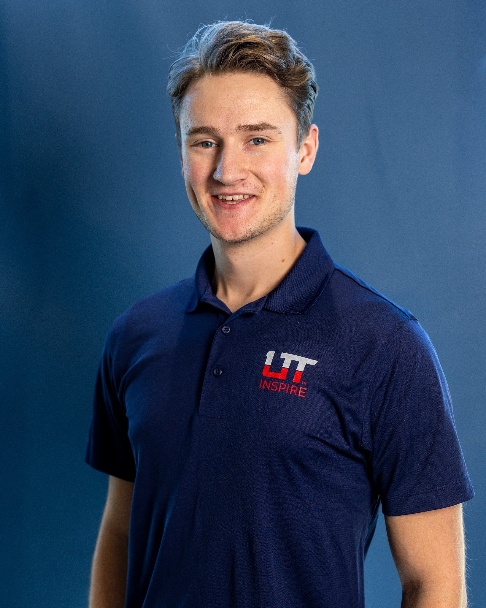

I’m a Mechanical Engineering senior at Utah Tech University, passionate about autonomous systems, controls, and the intersection of mechanical and software design. My experience spans mechanical design, prototyping, and systems integration across aerospace, defense, and mechatronics applications. I’ve contributed to UAV development, CubeSat simulation, and cross-disciplinary engineering projects that merge modeling, algorithm development, and hands-on fabrication. My current focus is on Guidance, Navigation, and Control (GNC) and how emerging automation technologies can advance the future of flight and space systems.
About

Projects
Autonomous Drone Project In Progress
Modifying a hobby FPV drone to run ArduPilot + ROS for autonomous navigation with onboard sensing and simulation.
▼ Show More
Project Overview
Self-directed, ongoing project to develop practical skills in autonomous systems by modifying a hobby-grade FPV drone to operate with ArduPilot and ROS-based control software. The objective is to achieve autonomous navigation and obstacle avoidance using onboard sensors and simulation environments.
Objectives & Progress
Self-directed, ongoing project to develop practical skills in autonomous systems by modifying a hobby-grade FPV drone to operate with ArduPilot and ROS-based control software. The objective is to achieve autonomous navigation and obstacle avoidance using onboard sensors and simulation environments.
Objectives & Progress
- Integrate ArduPilot firmware with ROS for high-level mission scripting and autonomous control
- Develop a Gazebo-based simulation environment to safely test flight algorithms
- Implement real-time obstacle detection and avoidance using onboard sensor data
- Tune PID controllers for flight stability and waypoint navigation
- Future work: integrate computer vision for mapping and object recognition
- ROS, Gazebo, ArduPilot
- PID control tuning and sensor calibration
- IMU, GPS, and LiDAR integration
- Simulation-based testing
- Autonomous navigation and control systems
CubeSat ADCS Development (Capstone) In Progress
Reusable 3‑axis ADCS stack (NDI + MEKF) for Utah Tech’s imaging CubeSat with high‑fidelity MATLAB/Simulink simulation.
▼ Show More
Project Overview
Ongoing senior capstone project focused on developing a modular Attitude Determination and Control System (ADCS) for Utah Tech’s CubeSat imaging mission. The system provides 3-axis attitude control and estimation capabilities designed for reuse across future student-built satellites.
Key Responsibilities
Ongoing senior capstone project focused on developing a modular Attitude Determination and Control System (ADCS) for Utah Tech’s CubeSat imaging mission. The system provides 3-axis attitude control and estimation capabilities designed for reuse across future student-built satellites.
Key Responsibilities
- Implementing Nonlinear Dynamic Inversion (NDI) and Multiplicative Extended Kalman Filter (MEKF) algorithms for control and estimation in MATLAB
- Modeling spacecraft dynamics and sensor response for accurate closed-loop simulation
- Integrating IMU, magnetometer, sun sensor, and star tracker data for attitude determination
- Designing and tuning control laws for reaction wheel and magnetorquer actuation
- Supporting system validation through Monte Carlo simulation and 3-axis attitude testing
- Modular and reusable ADCS architecture for multi-mission adaptability
- High-fidelity MATLAB/Simulink simulation environment
- Advanced estimation and control algorithms for precision pointing
- MATLAB / Simulink modeling
- Nonlinear Dynamic Inversion (NDI)
- Multiplicative Extended Kalman Filter (MEKF)
- Sensor fusion and control systems design
- Spacecraft dynamics and orbital mechanics
Autonomous UAV Control and Path Planning

Implemented RRT* path planning and a full MATLAB autopilot stack; validated in simulation and flight.
▼ Show More
Project Overview
Designed and implemented a complete autopilot stack for autonomous vehicles, with particular focus on advanced path planning algorithms.
Key Accomplishments
Designed and implemented a complete autopilot stack for autonomous vehicles, with particular focus on advanced path planning algorithms.
Key Accomplishments
- Enhanced basic RRT (Rapidly-exploring Random Tree) by implementing RRT*, an optimized version that produces more efficient paths for autonomous navigation
- Developed a MATLAB implementation that continuously optimizes paths rather than just finding feasible routes
- Added intelligent node selection and path rewiring capabilities that decreases total path length
- Successfully demonstrated path optimization in complex environments with obstacles
- Wrote MATLAB code for the entire autopilot system architecture
- Implemented system modeling component to accurately simulate vehicle dynamics in 3D space
- Designed and coded control laws including PID controllers for attitude and position control
- Developed state estimation algorithms to process and fuse multiple sensor inputs for accurate positioning
- Created guidance systems to translate high-level commands into executable trajectories
- Built navigation systems that integrate with the optimized path planning algorithms
- Tested the complete system in simulation and validated performance on multi-rotor platforms
- Algorithm development and optimization
- Control systems design
- State estimation and sensor fusion
- Simulation and testing methodologies
- MATLAB programming and system integration
- Autonomous systems architecture
- Real-time system performance analysis
Turbo Regatta

Electric propulsion system for pedal boats; led waterproof UI/UX mechanical design and integration.
▼ Show More
My Role & Contributions
- Led UI/UX mechanical design for the control system, creating waterproof housings (IP28-rated) for electronic components
- Worked directly with Computer Engineering teammates to ensure seamless integration between physical controls and digital interfaces
- Designed and fabricated ergonomic controls mounted to the boat's center console, optimizing user experience while meeting waterproofing requirements
- Managed wire routing and enclosure development for all user interface elements while maintaining design integrity
- Cross-functional collaboration between Mechanical, Electrical, Computer, and Mechatronics engineers
- Designed a propulsion system capable of variable speed control and full maneuverability (forward/reverse/turning)
- Created solutions within strict constraints: $600 budget, aluminum extrusion mounting only, battery limitations
- Developed a system that competed in both head-to-head races and precision maneuvering course challenges
- Applied fabrication and waterproofing techniques to ensure reliability in aquatic environments
Carnival Game

Arduino + IoT Hall‑effect scoring system for a water‑cannon game used by 400+ attendees.
▼ Show More
Project Overview
Collaborated in a team of four to design and build an interactive water-based arcade game for Utah Tech’s 2023 STEM Outreach Event. The system used Hall-effect sensors to detect water flow through a target and calculate scores in real time. As the only group to design a water-based game, our project stood out for its unique engineering challenges involving waterproofing and sensor calibration.
Key Contributions & Responsibilities
The game successfully tracked scores in real time and operated reliably for over 400 participants during the public STEM outreach event. The project earned 2nd place in the People’s Choice Award at Utah Tech’s 2023 Engineering Design Day.
Collaborated in a team of four to design and build an interactive water-based arcade game for Utah Tech’s 2023 STEM Outreach Event. The system used Hall-effect sensors to detect water flow through a target and calculate scores in real time. As the only group to design a water-based game, our project stood out for its unique engineering challenges involving waterproofing and sensor calibration.
Key Contributions & Responsibilities
- Led data acquisition and signal interpretation from Hall-effect sensors to generate accurate scoring feedback.
- Integrated multiple Arduino modules into a cohesive program shared across team members’ systems.
- Collaborated on physical construction and assembly using wood and hand tools to ensure stability and durability for public use.
- Assisted in troubleshooting and code integration between sensor, display, and scoring systems.
- Arduino Programming
- Sensor Calibration and Signal Processing
- Mechanical Design and Fabrication
- Team Integration and Prototyping
The game successfully tracked scores in real time and operated reliably for over 400 participants during the public STEM outreach event. The project earned 2nd place in the People’s Choice Award at Utah Tech’s 2023 Engineering Design Day.
Mechatronic Miniature Golf Green


Laser‑controlled gate mechanism (Arduino + SolidWorks + laser cutting) showcased at a STEM outreach event.
▼ Show More
Project Overview
Collaborated in a six-member engineering team to design and build a National Parks–themed Miniature Electronic Golf Green for Utah Tech’s 2022 STEM Outreach Event. Each member designed a unique hole inspired by U.S. National Parks; my section recreated Utah’s iconic Delicate Arch and Landscape Arch , combining mechanical design and sensor-driven automation using Arduino.
Key Contributions & Responsibilities
The National Parks–themed hole captivated attendees and performed reliably throughout the event, engaging over 300 participants . The project earned 2nd place in the People’s Choice Award at Utah Tech’s 2022 Engineering Design Day .
Collaborated in a six-member engineering team to design and build a National Parks–themed Miniature Electronic Golf Green for Utah Tech’s 2022 STEM Outreach Event. Each member designed a unique hole inspired by U.S. National Parks; my section recreated Utah’s iconic Delicate Arch and Landscape Arch , combining mechanical design and sensor-driven automation using Arduino.
Key Contributions & Responsibilities
- Designed two Utah-inspired arches in SolidWorks , laser-cut from wood and engineered with flexibility to form smooth, curved structures.
- Developed a laser/photo-diode trip system that triggered an Arduino-controlled gate, simulating an interactive “shortcut” between course sections.
- Integrated the mechanism so that a golf ball passing through Delicate Arch opened the Landscape Arch gate, guiding the ball directly to the hole.
- Contributed to mechanical assembly and fabrication, ensuring the system could withstand extensive public use during the outreach event.
- SolidWorks
- Laser Cutting
- Arduino Programming
- Optical Sensors and Mechatronic System Design
- Wood Fabrication
The National Parks–themed hole captivated attendees and performed reliably throughout the event, engaging over 300 participants . The project earned 2nd place in the People’s Choice Award at Utah Tech’s 2022 Engineering Design Day .
Experience
- UAV Technician Intern — Vector (Jul–Aug 2025 · Draper, UT): Built and tested UAV systems; supported prototype→production transition; contributed to flight testing and post‑flight analysis.
- Mechanical Engineering Intern — Wilson Connectivity (May 2023–Jan 2025 · St. George, UT): Designed durable antenna mounts; developed PCB/booster test fixtures; improved testing efficiency.
- Race Timer — Brooksee (Mar 2022–Nov 2024): Operated RFID/BLE timing systems; supported migration from passive RFID to BLE with custom antennas.
- Materials Intern — RAM Aviation Space & Defense (May–Aug 2022 · St. George, UT): Optimized pneumatics assembly; contributed to cost‑reduction; assembled kits in production.
Education
B.S. Mechanical Engineering — Utah Tech University, Expected May 2026
Skills
- Design & Simulation: SolidWorks, OnShape, Fusion 360, ANSYS, ROS
- Fabrication: Laser Cutting, 3D Printing, CNC Machining/Operations, Manual Mill, Manual Lathe, Soldering, Welding
- Programming: MATLAB, Arduino